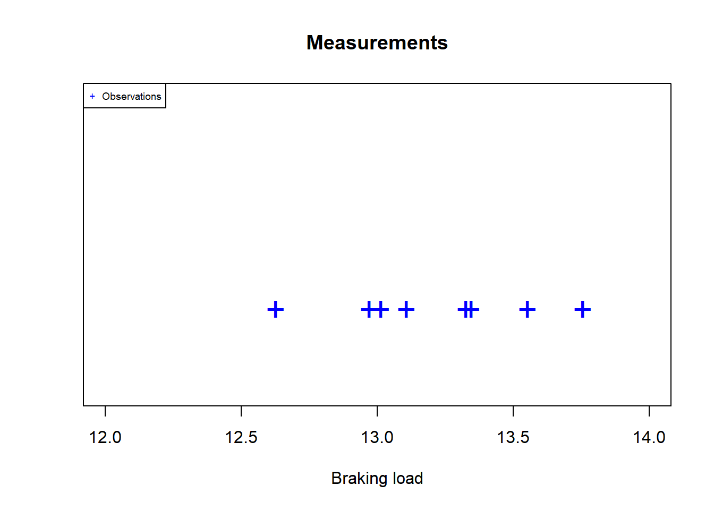
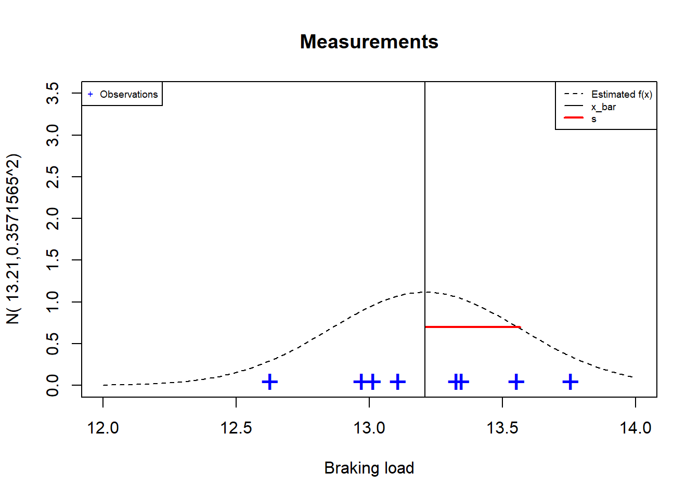
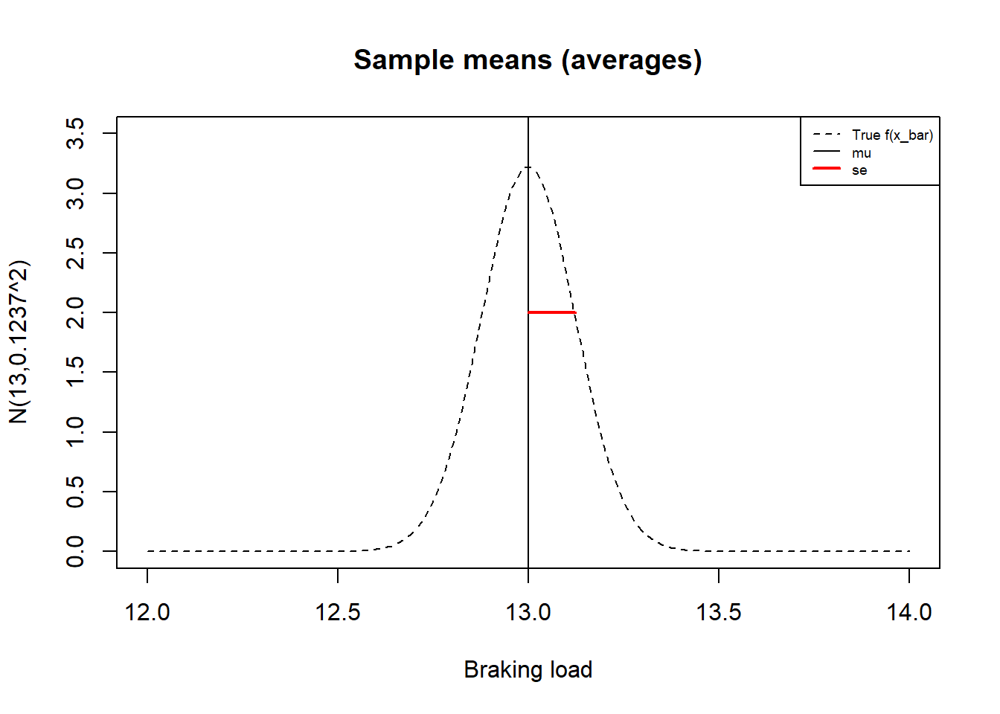
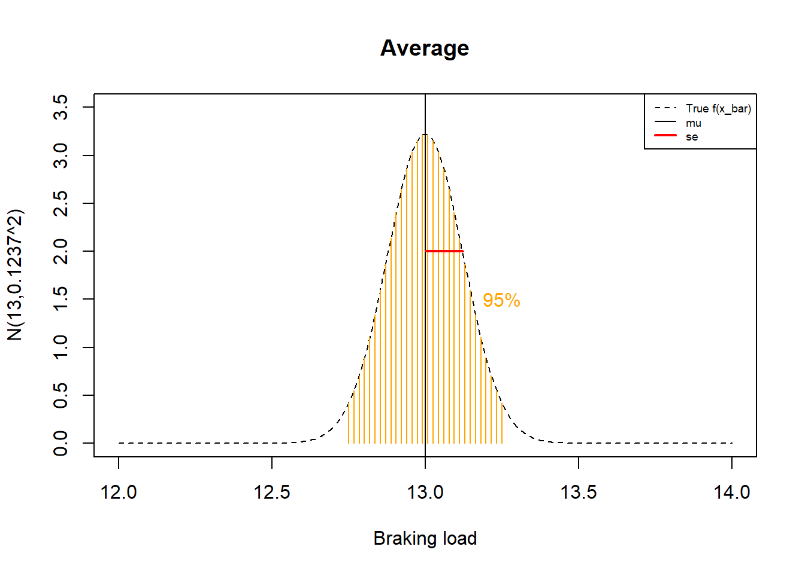

Chapter 10 Sampling distributions
10.1 Objective
In this chapter, we are going to study estimates of the mean and variance of normal distributions using random samples.
We will introduce the sample mean and the sample variance as random variables that estimate the parameters of the normal distribution.
The sample mean and the sample variance have probability density functions, these are called sample density functions.
10.2 Aleatory sample
Example (Cables)
Imagine that a client asks your metallurgical company to sell cables for \(8\) that can transport up to \(96\) Tons; that’s \(12\) Tons each. You must guarantee that none of them will break with this weight.
You stock a set of cables that might work, but you’re not sure. So you take \(8\) Cables at random, and charge them until they break.
We say that you take a random sample of size \(8\), which means that you repeat the random experiment \(8\) times. Here are the results
## [1] 13.34642 13.32620 13.01459 13.10811 12.96999 13.55309 13.75557 12.62747
Definition:
A random sample of size \(n\) is the replication of a random experiment \(n\) independent times.
- A random sample is an random variable \(n\)-dimensional
\[(X_1, X_2, ... X_n)\]
where \(X_i\) is the i-th iteration of the random experiment with common distribution \(f(x; \theta)\) for any \(i\)
- An observation of a random sample is the set of \(n\) values obtained from the experiments
\[(x_1, x_2, ... x_n)\] Our observation of the sample of size \(8\) cables was
## [1] 13.34642 13.32620 13.01459 13.10811 12.96999 13.55309 13.75557 12.62747Example (Cables)
In the observed sample of the breaking load of the cables it was observed that
None of them broke \(12\) Tons.
There was one that broke at \(12.62747\) Tons.
Do you take a chance and sell a random sample of \(8\) cables from your stock? What happens if your company is responsible for a cable break and has to pay a large fine?
To assure the customer that the cables will not break at \(12\) Tons, we would like to see that \(P(X \leq 12)\) is reasonably low.
10.3 Calculation of probabilities
To calculate probabilities we need:
A probability model (probability function)
The parameters of the model (the values of the probability function)
Let’s assume that the breaking load of the cables follows a normal probability density function.
\[X \rightarrow N(x; \mu, \sigma^2)\]
To compute \(P(X \leq 12)\), we need the parameters \(\mu\) and \(\sigma^2\). How can we estimate the parameters of the observed sample?
10.4 Parameter estimation
To find likely values for the parameters we use data. Therefore, we take a random sample. That is, we repeat the experiment \(n\) times, collect data, and use it to estimate the parameters.
Estimate of the mean and variance
Recall that for a discrete random variable, we define the mean as
\[\mu=\sum_{i}^m x_if(x_i)\]
which is the center of gravity of the probabilities, where \(f(x_i)\) is the probability function. This definition was motivated by the center of gravity of the observations
\[\bar{x}= \frac{1}{n} \sum_{i}^n x_i = \sum_{i}^m x_if_i\]
which we define as the average, and where \(f_i\) are the relative frequencies. Remember that \(n\) is the number of observations (it can be as large as we want) and \(m\) is the number of possible outcomes (usually fixed by the sample space). We have argued that when \(n \rightarrow \infty\) then
\[\hat{P}(X=x)=f_i\] This means that the probabilities can be estimated (by putting on a hat) by the relative frequencies when \(n\) is large, because \(lim_{n\rightarrow \infty}f_i=f(x_i)\). Therefore, we should also have that the mean \(\mu\) can be estimated by the mean \(\bar{x}\)
\[\hat{\mu}=\bar{x}= \sum_{i}^m x_i\hat{P}(X=x)\]
Thus, we may take the center of the probability function as the center of gravity of the data. Doing this we will make an error that we can assume, as we will discuss later on.
With the variance
\[\sigma^2=\sum_{i}^m(x_i-\mu)^2f(x_i)\]
we have a similar situation. In the limit when \(n \rightarrow \infty\)
\[\hat{\sigma}^2=s^2=\frac{1}{n-1}\sum_{i=1}^n(x_i-\bar{x})^2\]
and we assume that the moment of inertia of the data is close to the moment of inertia of the probabilities.
Example (Cables)
Assuming that the breaking load of our cable is a normal random variable
\[X \rightarrow N(x; \mu, \sigma^2)\]
we use the estimates \(\bar{x}_{stock}=13.21\) (mean(x)) and \(s^2=0.3571565^2\) (sd ( x)^2) as the values of \(\mu\) and \(\sigma^2\). So the fitted model is
\[X \rightarrow N(x; \mu=13.21, \sigma^2=0.3571565^2)\] In this problem we didn’t know \(\mu\) or \(\sigma\) and therefore we are guessing their values and the underlying model

What is the probability that the cable will break at \(12\) Tons?
Since \[X \rightarrow N(x; \mu=13.21, \sigma^2=0.3571565^2)\]
so
\[P(X \leq 12)= F(12; \mu=13.21, \sigma^2=0.1275608)\]
In R pnorm(12,13.21, 0.3571565)\(=0.000352188\)
Given the observed sample, there is an estimated probability of \(0.03\%\) that a single cable breaks in \(12\) Tons. We have a probabilistic argument for selling the cables.
10.5 Margin of error of estimates
When we estimate parameters using data, such as by taking the value of \[\hat{\mu}=\bar{x}\]
for the value of \(\mu\); and the value of
\[\hat{\sigma}^2=s^2\] by the value of \(\sigma^2\), we know that we are making a mistake. We know that if we take another sample of size \(8\) cables the estimate will change, because the average \(\bar{x}\) will change.
Can we get an idea of how big the error is in our estimate?
The first thing to realize is that the numerical value we get for \[\bar{x}\] is the observation of a random variable \[\bar{X}\]
Definition
The sample mean (or average) of a random sample of size \(n\) is defined as
\[\bar{X}=\frac{1}{n}\sum_{i=1}^n X_i\]
The average is a random variable that in our sample of size \(8\) took the value
\[\bar{x}_{stock}=13.21\]
If we take another sample, this number will change.
Mean as estimator
The number \(\bar{x}\) can be used to estimate the unknown parameter \(\mu\) because the random variable \(\bar{X}\) satisfies these two important properties
- is unbiased: \[E(\bar{X})=\mu\]
- is consistent: \[lim_{n \rightarrow \infty} V(\bar{X}) = 0\]
The first property holds because \[E(\bar{X})=E\big(\frac{1}{n}\sum_{i=1}^n X_i\big)=E(X)=\mu\]
The second property holds because \[V(\bar{X})=V\big(\frac{1}{n}\sum_{i=1}^n X_i\big)=\frac{V(\sum_{i=1}^ nX_i)}{n^2}=\frac{V(X)}{n}=\frac{\sigma^2}{n}\]
Which uses the fact that each random experiment in the sample is independent and therefore \(V(\sum_{i=1}^n X_i)=nV(X)\).
Estimate of \(\mu\)
As a consequence of properties 1 and 2, we understand that the value \(\bar{x}\) concentrates closer and closer to \(\mu\) as \(n\) increases. This means that the error we make when we take a value of \(\bar{x}\) as the estimate of \(\mu\)
\[\bar{x}=\hat{\mu}\]
gets smaller and smaller as the sample gets larger and larger because the variance of \(\bar{x}\) gets smaller with large \(n\).
10.6 Inference
We know that when we take large samples, our error is small. However, for a given value of \(n\) we want to have a error measure. Therefore, we ask about the probability of making an error of a given size when estimating \(\mu\) with \(\bar{x}\).
When we calculate probabilities in an estimator, we say that we are making an inference. Inference problems often arise when we are interested in calculating the probability of making an error in estimating \(\mu\) with \(\bar{x}\).
To calculate probabilities we need
A probability model (probability function)
The parameters of the model (the values of the probability function)
What are the probability functions of \(\bar{X}\) and \(S^2\) so that we can calculate their probabilities?
These probability functions are called sampling probability functions, because they are derived from a sampling experiment.
Example (Cables)
Let’s ask an inference question. Imagine our cables are certified to break with an average load of \(\mu = 13\) Tons with variance \(\sigma^2=0.35^2\).
If we take a random sample of \(8\) cables, what is the probability that the sample mean \(\bar{X}\) will be within a margin of error of \(0.25\) Tons of the mean \(\mu\)?
\[P(- 0.25\leq \bar{X}-\mu \leq 0.25)\]
To calculate this probability, we need to know the probability function of \(\bar{X}\).
10.7 Sample mean distribution
Theorem: If \(X\) follows a normal distribution \[X \rightarrow N(\mu, \sigma^2)\]
then \(\bar{X}\) is normal
\[\bar{X} \rightarrow N(\mu, \frac{\sigma^2}{n})\] and \(\bar{X}\) has
mean \[E(\bar{X})=\mu\] We say that \(\bar{X}\) is unbiased because its expected value is exaclty \(\mu\).
variance \[V(\bar{X})=\frac{\sigma^2}{n}\] We say that \(\bar{X}\) is consistent because is gets smaller with large \(n\).
We call \(se=\sqrt{V(\bar{X})}\) the standard error of the sample mean. The standard error is also written as \(\sigma_{\bar{x}}\). Note that this is the error we expect when using \(\bar{x}\) as the value of \(\mu\), and it is the bias we needed to correct for \(S_n^2\).
So, if we know \(\mu\) and \(\sigma\), we can calculate the probabilities of \(\bar{X}\) using the normal distribution.
Remember that we have two probability functions:
The probability function of \(X\) is also known as the population probability function
The probability function of \(\bar{X}\) is a probability function of the sample.
Example (Cables)
Probability densities for \(X\) and \(\bar{X}\)
In our new problem, we now know \(\mu\) and \(\sigma\) and the probability function of the population
\[X \rightarrow N(\mu=13, \sigma^2=0.35^2)\]

Since \(X\) is normal, then \(\bar{X}\) is normal, and therefore we also know the probability function of the sample mean \(\bar{X}\)
\[\bar{X} \rightarrow N(13, \frac{0.35^2}{8})\]
which has mean and variance
- \(E(\bar{X})=\mu=13\)
- \(V(\bar{X})=\frac{\sigma^2}{n}=\frac{0.35^2}{8}=0.01530169\)

Finally we want to calculate the probability that our estimate has a margin of error of \(0.25\). That is a distance of \(0.25\) from the mean. That’s \[P(-0.25 \leq \bar{X} - 13\leq 0.25)=P(12.75 \leq \bar{X} \leq 13.25)\]
\(=F(13.25; \mu, \sigma^2/n)-F(12.75; \mu, \sigma^2/n)\)
In R we can calculate it as:
pnorm(13.25, 13, 0.1237)-pnorm(12.75, 13, 0.1237)=0.956.
Remember: \(se=\sigma_{\bar{x}}=\sqrt{0.01530169}=0.1237\)
Therefore \(95.6\%\) of the means \(\bar{X}\) of random samples of size \(8\) are at a distance of \(0.25\) from the mean \(\mu=13\).
If we sell our process for building the cables, we can tell new manufacturers that when they follow our instructions, they can test the process by taking a sample of size \(8\) cables. In that case, they can expect the sample mean to fall between \((12.75, 13.25)\) about \(95\%\) of the times.

When we perform random sampling we observe:
## [1] 13.34642 13.32620 13.01459 13.10811 12.96999 13.55309 13.75557 12.62747Assuming \(\mu=13\) then our observed error in estimating the mean is the difference
\[\bar{x}_{stock}-\mu=13.21-13=0.21\]
This is within the margin of error of \(95.6\%\) and therefore, we must consider that the manufacturing process is working as expected.

10.7.1 Sample sum
If we are interested in using all \(8\) cables at the same time to carry a total of \(96\) Tons, then we should consider adding their individual contributions.
The sample sum is the statistic
\[Y=n \bar{X}=\sum_{i=1}^n X_i\]
A statistic is any function from the random sample \((X_1, ... X_n)\).
Theorem: if \(X\) follows a normal distribution \[X \rightarrow N(\mu, \sigma^2)\]
so \(Y\) is normal
\[Y \rightarrow N(n\mu, n\sigma^2)\]
\(Y\) has
- mean \[E(Y)=n\mu\]
- variance \[V(Y)=n\sigma^2\]
Example (sum of cables)
What is the probability that when we put all the cables together, they can carry a total weight between \(102=8(13 - 0.25)\) and \(106=8(13+ 0.25)\) Tons?
We know that for our Cables \[X \rightarrow N(\mu=13, \sigma^2=0.35^2)\] then
\[Y \rightarrow N(n\mu=104, n\sigma^2=8\times 0.35^2)\]
with mean and variance
- \(E(Y)=n\mu=104\)
- \(V(Y)=n\sigma^2=8\times 0.35^2=0.98\); \(\sqrt{V(Y)}=0.9899495\)
We want to calculate \[P(102 \leq Y \leq 106)\]
\(=F(102; n\mu, n\sigma^2)-F(106; n\mu, n\sigma^2)\)
In R we can calculate it as:
pnorm(106, 104, 0.9899495)-pnorm(102, 104, 0.9899495)=0.956.
Therefore \(95.6\%\) of the total weight that \(8\) cables can carry is between \(102\) and \(106\) Tons, or a distance of \(8*0.25=2\) Tons from the total mean \(n\mu=104\).
10.8 Sample variance
By estimating the variance
\[s^2=\hat{\sigma}\]
We also make a mistake. How can we estimate the error we make?
Definition
The sample variance \(S^2\) of a random sample of size \(n\)
\[S^2= \frac{1}{n-1}\sum_{i=1}^n(X_i-\bar{X})^2\]
is the dispersion of the measurements around \(\bar{X}\). In our sample of size \(8\), \(S^2\) took the value
\[s_{stock}^2=\frac{1}{n-1}\sum_{i=1}^n(x_i-\bar{x})^2=0.1275608\]
\(S^2\) is
- unbiased: \(E(S^2)=V(X)=\sigma^2\)
- consistent: \(n \rightarrow \infty\), \(V(\bar{S^2}) \rightarrow 0\)
and therefore \(S^2\) consistently estimates \(\sigma^2\)
We can take a value of \(s^2\) as an estimate for \(\sigma^2\) or
\[s^2=\hat{\sigma}^2\] Similar to \(\hat{\mu}\), the error of this estimate gets smaller and smaller as \(n\) gets bigger and bigger.
The unbiased sample variance (why do we divide by n-1?)
We could propose to estimate \(\sigma^2\) by dividing the squared differences of \(\bar{X}\) by \(n\)
\[S_n^2=\frac{1}{n}\sum_{i=1}^n(X_i-\bar{X})^2\]
\(S_n^2\) is therefore
- biased: \(E(S_n^2) = \sigma^2-\frac{\sigma^2}{n} \neq \sigma^2\)
- but consistent \(V(S_n^2) \rightarrow 0\) when \(n\rightarrow \infty\)
The bias term \(\frac{\sigma^2}{n}\) arises because \(S_n^2\) measures the spread around \(\bar{X}\) and not around \(\mu\). Remember that the error we make when we substitute \(\bar{x}\) for \(\mu\) is the variance of \(\bar{X}\): \(\sigma^2/n\). Let us correct for bias, writing equation 1 above as:
\[E(\frac{n}{n-1}S_n^2)=\sigma^2\]
We can define the sample variance (corrected) \[S^2=\frac{n}{n-1}S_n^2=\frac{1}{n-1}\sum_{i=1}^ n(X_i-\bar{X})^2\]
which is an unbiased estimator of \(\sigma^2\) because \(E(S^2)=\sigma^2\).
We can also have inference problems when we are interested in the probability of the sample variance \(S^2\).
Consider a quality control process that requires the leads to be produced close to the specified value \(\mu\). We don’t want cables that break too far from the mean.
If a sample of size \(8\) cables is very scattered (\(S^2>0.3\)), we stop production: the process is out of control.
What is the probability that the sample variance of a sample of size \(8\) Cables will be greater than the required \(0.3\)?
10.9 Probabilities of the sample variance
Theorem: If \(X\) follows a normal distribution \[X \rightarrow N(\mu, \sigma^2)\]
The statistic:
\[W=\frac{(n-1)S^2}{\sigma^2} \rightarrow \chi^2(n-1)\]
has a distribution \(\chi^2\) (chi-square) with \(df=n-1\) degrees of freedom given by
\[f(w)=C_n w^{\frac{n-3}{2}} e^{-\frac{w}{2}}\]
where:
- \(C_n=\frac{1}{2^{(n-1)/2\sqrt{\pi(n-1)}}}\) ensures $_{-}^{} f (t)dt=$1
- \(\Gamma(x)\) is the Euler factorial for real numbers
If we know the value of \(\sigma\), we can calculate the probabilities of \(S^2\) using the \(\chi^2\) distribution for \(W\).
10.10 \(\chi^2\)-statistic
The probability density \(\chi^2\) has a parameter \(df=n-1\), called degrees of freedom. Let’s look at some probability densities in the family of probability models \(\chi^2\)

Example (variations in cable break)
If we know that our cables \[X \rightarrow N(\mu=13, \sigma^2=0.35^2)\]
so
\[W=\frac{(n-1)S^2}{\sigma^2}= \frac{7S^2}{0.35^2} \rightarrow \chi^2(n-1)\]
we can calculate \[P(S^2 > 0.3)=P(\frac{(n-1)S^2}{\sigma^2} > \frac{(n-1)0.3}{\sigma^2 } )\] \(=P(W > \frac{7*0.3}{0.35^2})=P(W > 17.14286)\)
\(=1-P(W \leq 17.14286)\)
\(= 1- F_{\chi^2,df=7}(17.14286)=0.016\)
in R
1-pchisq(17.14286, df=7)=0.016
There is only a \(1\%\) chance of getting a value greater than \(s^2=0.3\). So \(s^2>0.3\) seems to be a good criteria to stop production and review the process.
If we take a random sample and get a value of \(s ^2\) that is greater than \(0.3\), it will be a rare observation if all is well. We tend to believe that the observed values are common, not rare, so we may think that something is not right.
When we perform random sampling we observe:
## [1] 13.34642 13.32620 13.01459 13.10811 12.96999 13.55309 13.75557 12.62747Therefore, our observed value was \(s^2_{stock}=0.1275608\)
The sample is not very sparse because \(s^2_{stock} < 0.3\) and we believe that all is well and production is under control.
10.11 Questions
1) The sample mean is an unbiased estimator of the population mean because
\(\qquad\)a: The expected value of the sample mean is the population mean; \(\qquad\)b: The expected value of the population mean is the sample mean; \(\qquad\)c: The standard error approaches zero as \(n\) approaches infinity; \(\qquad\)d: The variance of the sample mean approaches zero as \(n\) approaches infinity;
2) Why is the statistic \(S^2=\frac{1}{n-1}\sum_{i=1}^{n}(X_i -\bar{X})^2\) used? instead of \(S_n^2=\frac{1}{n}\sum_{i=1}^{n}(X_i -\bar{X})^2\) to estimate the variance of a random variable?
\(\qquad\)a: because its variance is \(0\); \(\qquad\)b: because it is a consistent estimator of \(\sigma^2\); \(\qquad\)c: because it is an unbiased estimator of \(\sigma^2\); \(\qquad\)d: because it is the mean square distance to the sample mean (\(\bar{X}\));
3) What is the variance of the sample mean \(\bar{X}=\frac{1}{n}\sum_{i=1}^n X_i\)?
\(\qquad\)a:\(\sigma\); \(\qquad\)b:\(\frac{\sigma}{\sqrt{n}}\); \(\qquad\)c:\(\sigma^2\); \(\qquad\)d:\(\frac{\sigma^2}{n}\);
4) What is the mean and variance of the sample sum?
\(\qquad\)a:\(\mu\), \(n\sigma\); \(\qquad\)b:\(n\mu\),\(n\sigma\); \(\qquad\)c:\(\mu\), \(n\sigma^2\); \(\qquad\)d:\(n\mu\), \(n\sigma^2\);
5) An inference question implies:
\(\qquad\)a: calculate the expected value of an estimator; \(\qquad\)b: estimate the value of a parameter; \(\qquad\)c: calculate a probability of an estimator; \(\qquad\)d: fit a probability model;
10.12 Exercises
10.12.0.1 Exercise 1
An electronics company manufactures resistors that have an average resistance of 100 ohms and a standard deviation of 10 ohms. The resistance distribution is normal.
What is the sample mean of \(n=25\) resistors? (R:100)
What is the variance of the sample mean of \(n=25\) resistors? (R:4)
What is the standard error of the sample mean of \(n=25\) resistors? (R:2)
Find the probability that a random sample of \(n = 25\) resistors have an average resistance of less than \(95\) ohms (R: 0.0062)
10.12.0.2 Exercise 2
A battery model charges an average of \(75\%\) of its capacity in one hour with a standard deviation of \(15\%\).
If the battery charge is a normal variable, what is the probability that the charge difference between the sample mean of \(25\) batteries and the mean charge is at most \(5\%\)? (R:0.9044)
If we charge \(100\) batteries, what is that probability? (R:0.9991)
If instead we only charge \(9\) batteries, what charge \(c\) is exceeded by the sample mean with probability \(0.015\)? (A:85.850)